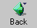
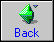
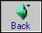
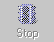
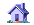
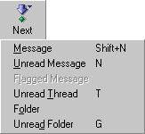
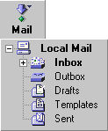

Menu Button Requirements
Written by Eric Vaughan
Last updated 3/12/99
Overview
This document covers two related UI elements: Image Buttons and Menu Buttons.
An Image Button is a button capable of displaying both an image (gif, jpeg, etc) and descriptive text within the boundary of the button. Clicking anywhere within the boundary of the object triggers an action (normally a JavaScript onClick handler). The button can be enabled or disabled, and have a different appearance when the mouse is inside its border.
A Menu Button extends an Image Button to allow for a menu or tree to popdown from the button when the mouse is down for a certain amount of time (referred to as "click and hold"). An example of a Menu Button in 4.X is the "Back" button which pops down a menu containing the window history on a click-and-hold. Mozilla extends this notion with the ability to pop down a live tree view.
Requirements
For Image Buttons:
- Manipulation of images and properties through the DOM and CSS
- Must support the following JavaScript event handlers
- onClick
- onMouseOver
- onBlur
- onChange
- onFocus
- Must support 4 images and
states
normal

rollover

depressed

disabled

- Must support multiple alignment
text right image left
text left image right
Text bottom image top
Text top image top - If the button is compressed smaller than it can accommodate,
it needs to be able to truncate its text.
Right truncation
text right i...
Left truncation
....t image right
Center truncation
text ... left
- A context menu should appear with a context click if the button doesn't have a menu attached to it already.
- Should be able to gray out its image automatically in a disabled state (without forcing an additional image to be specified).
For Menu Buttons
Everything an Image Button could do, plus the following:
- show a popdown menu, either on a click or a click-and-hold

- show a popdown tree, either on a click or a click-and-hold

- For the tree, users need to be able to expand or collapse folders within the tree without it going away. The tree goes away only when the user clicks outside of the presented tree or on an element that has no children (a "leaf").
- Children which populate the popdown menu or popdown tree are specified as children of the Menu Button in the DOM.
- Child content can be generated from an RDF datasource. This implies that the creation of this child object (be it a tree, menu, etc) must be fully dynamic. The button should only attempt to construct the child object when it knows it needs to display it.